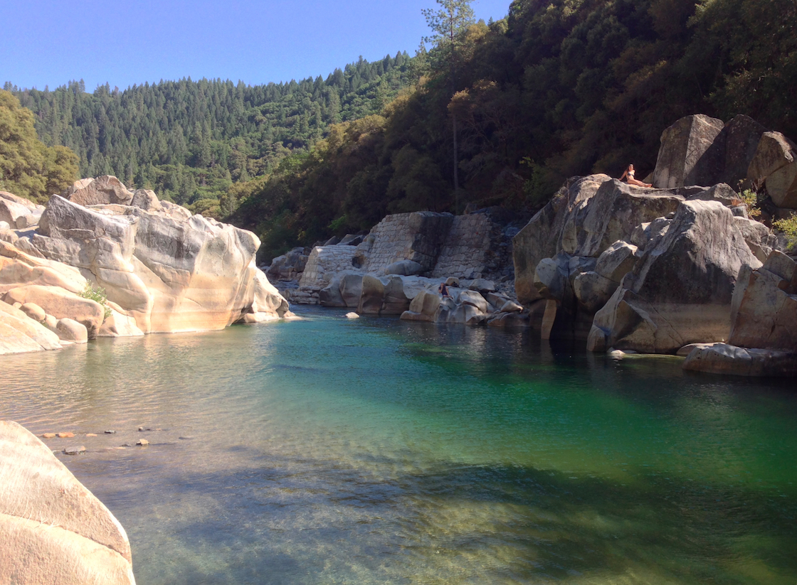
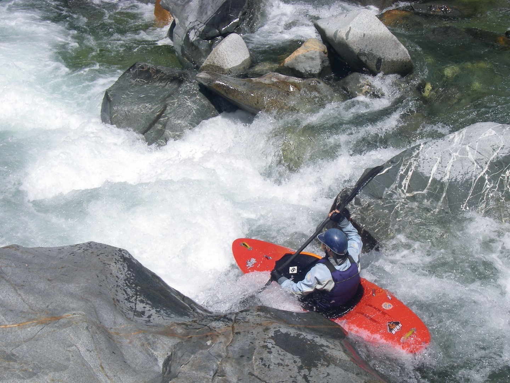
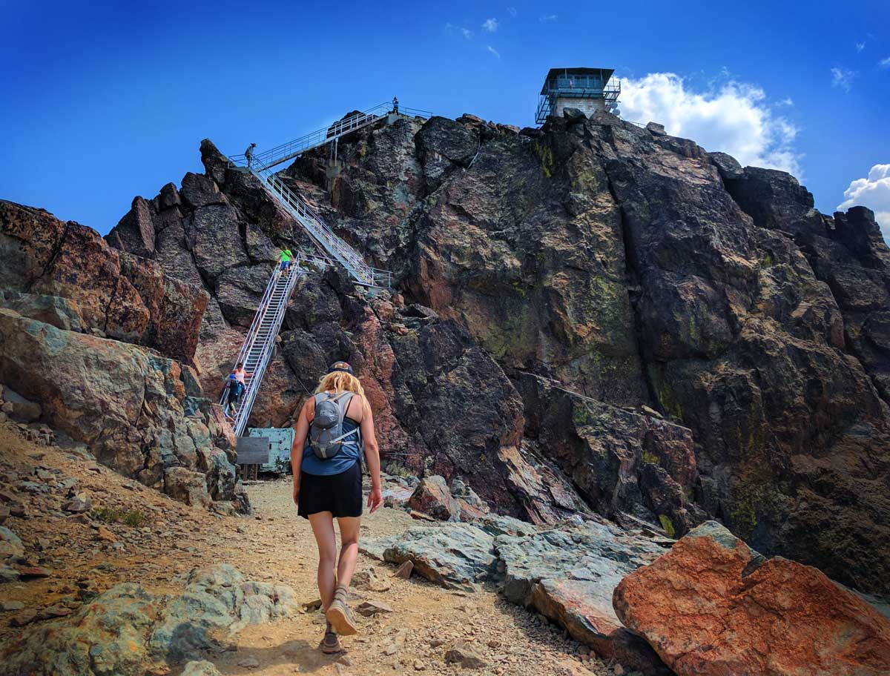

Take a dip in the blue-green waters of the Sierra Nevada's
Rent a kayak or raft to travel down the rapids
At South Yuba River Experiences, we have all the gear you need to explore the Sierra Nevada's. Be sure to stop by and pick up a hiking map or a kayak to explore the many rivers in the area.
View Pricing Options More infoThings to do in the Sierra Nevada's

Are you an experienced kayaker? Come enjoy Class 2-4 rapids through the area that was the center of the Gold Rush.

The Sierra Nevada's has hikes for every level of hiker, from easy to hiking to the 8,591-foot-elevation Sierra Butte fire watchtower.
Come unplug from the fast pace of technology and society and enjoy nature at its finest.